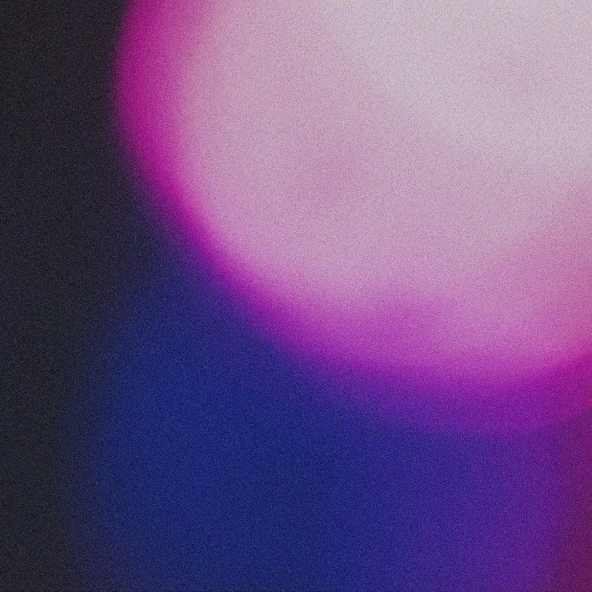
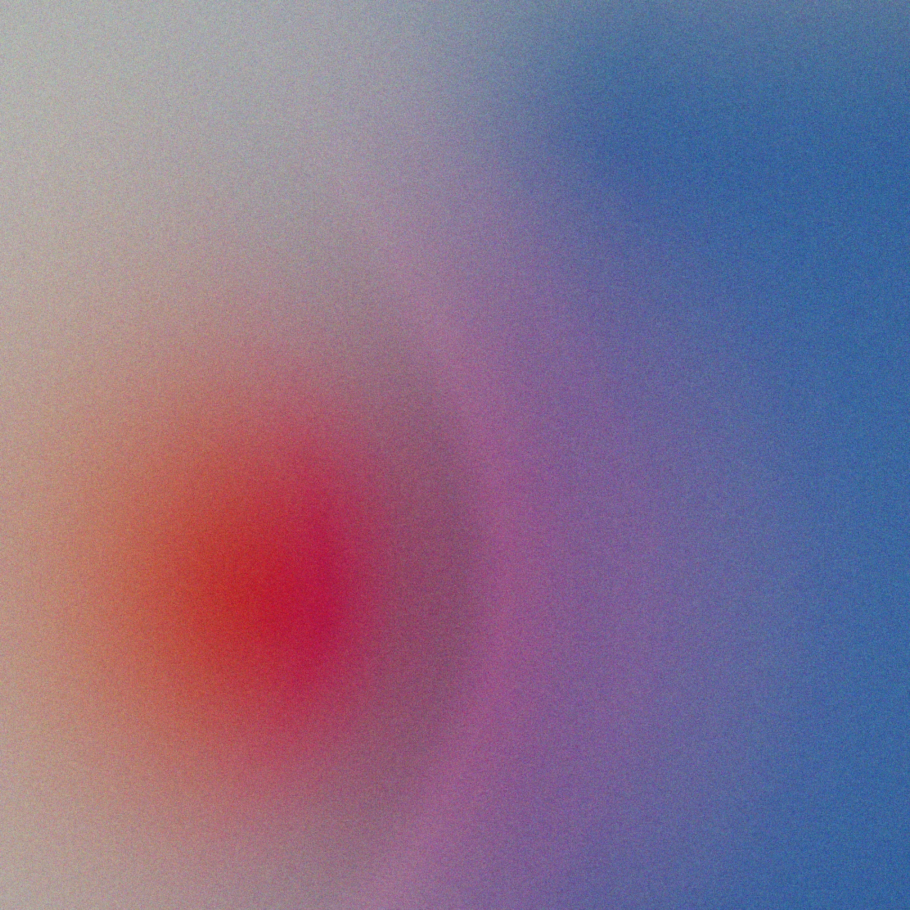
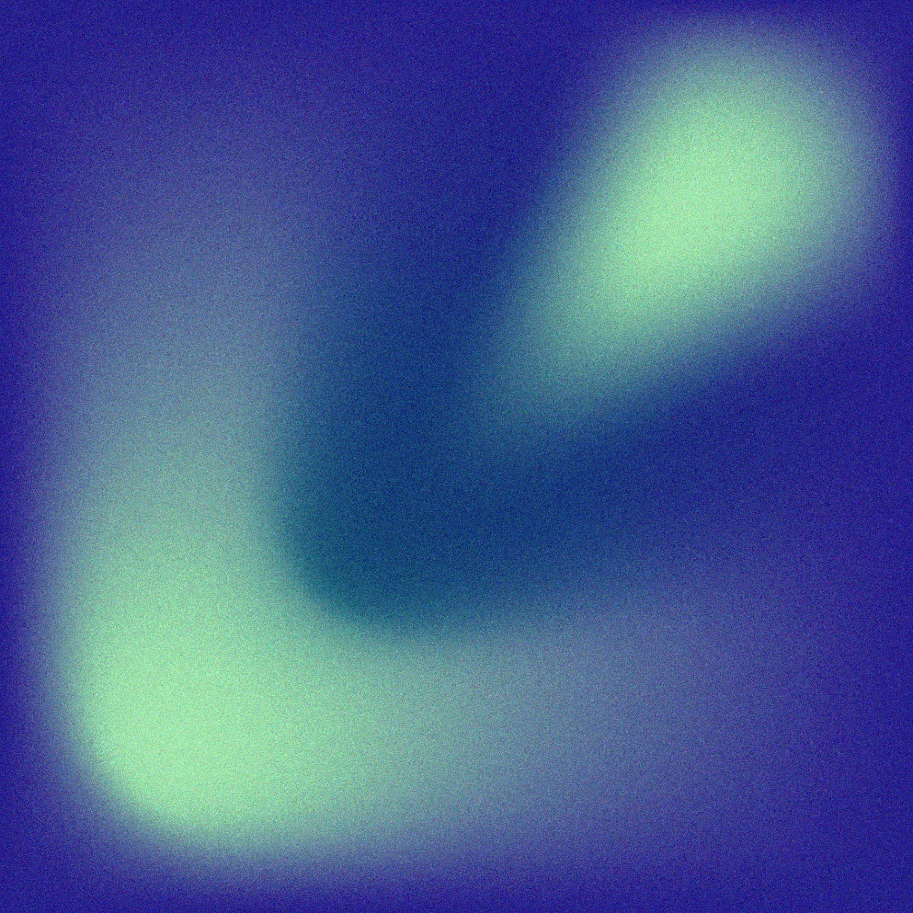
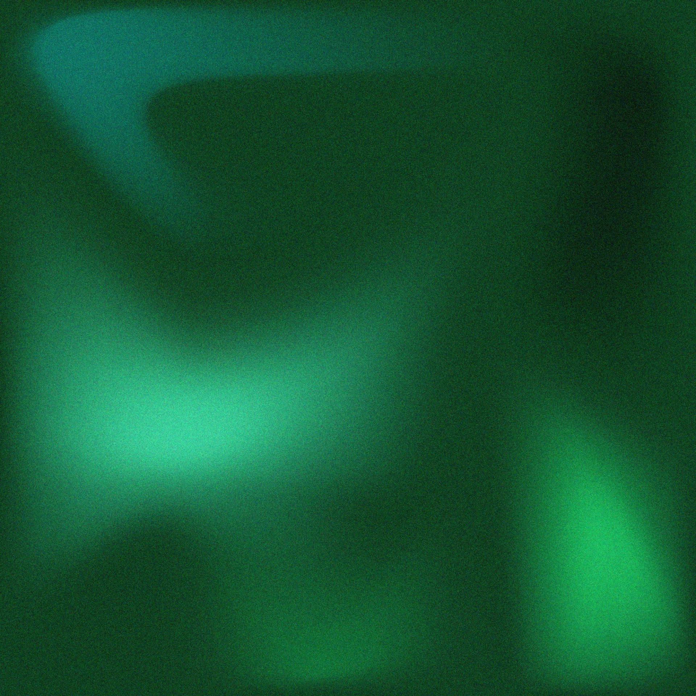
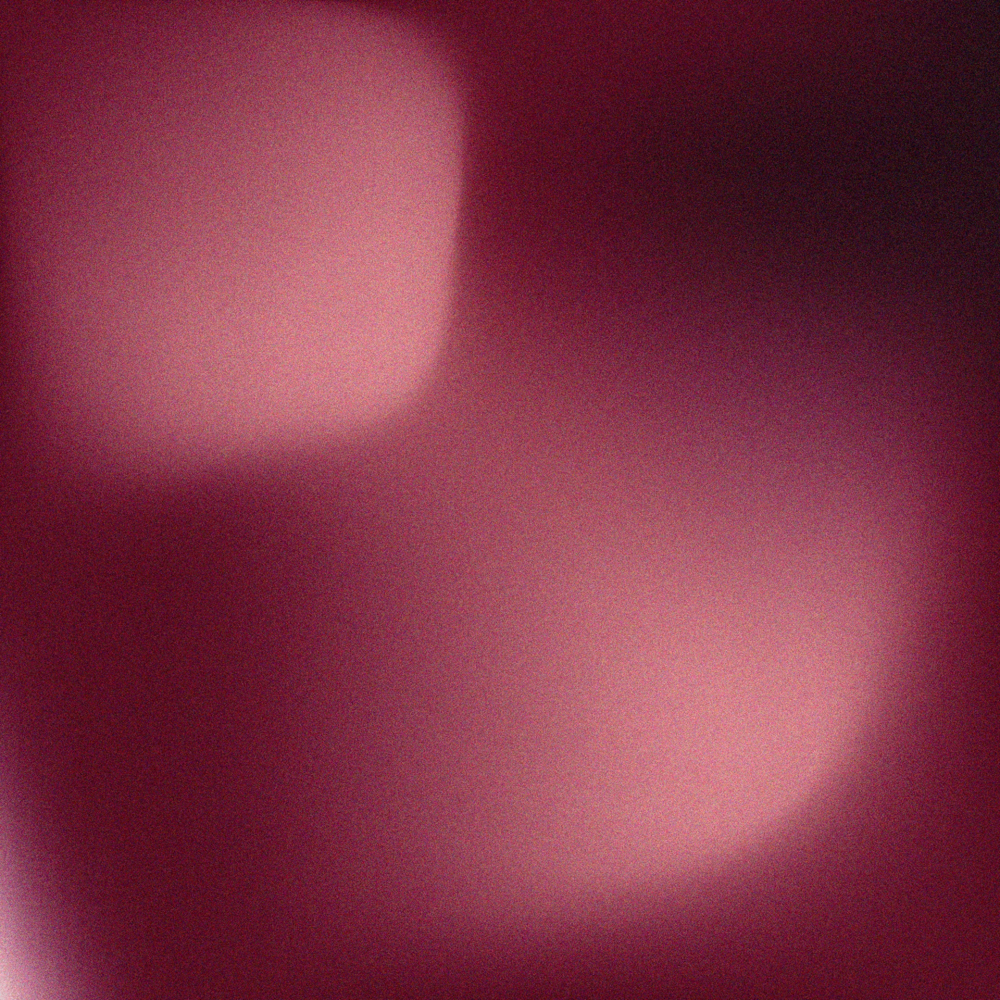
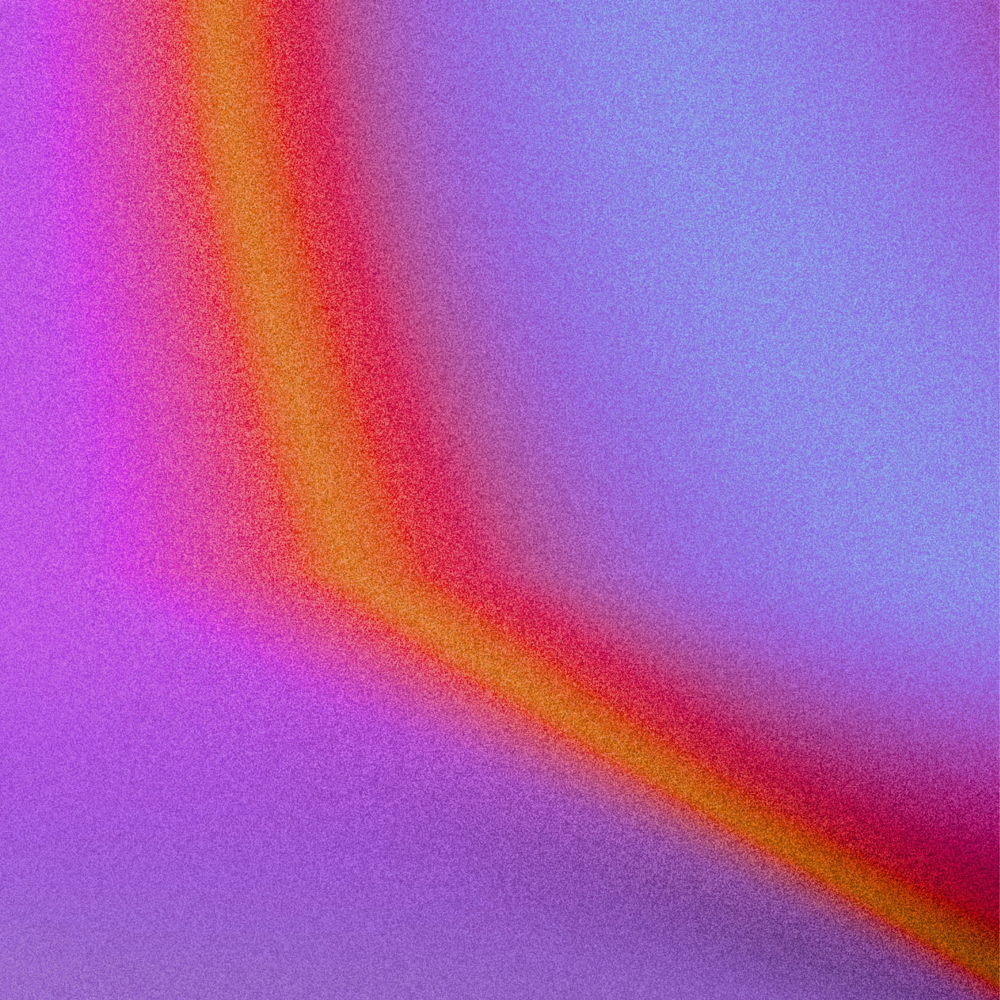
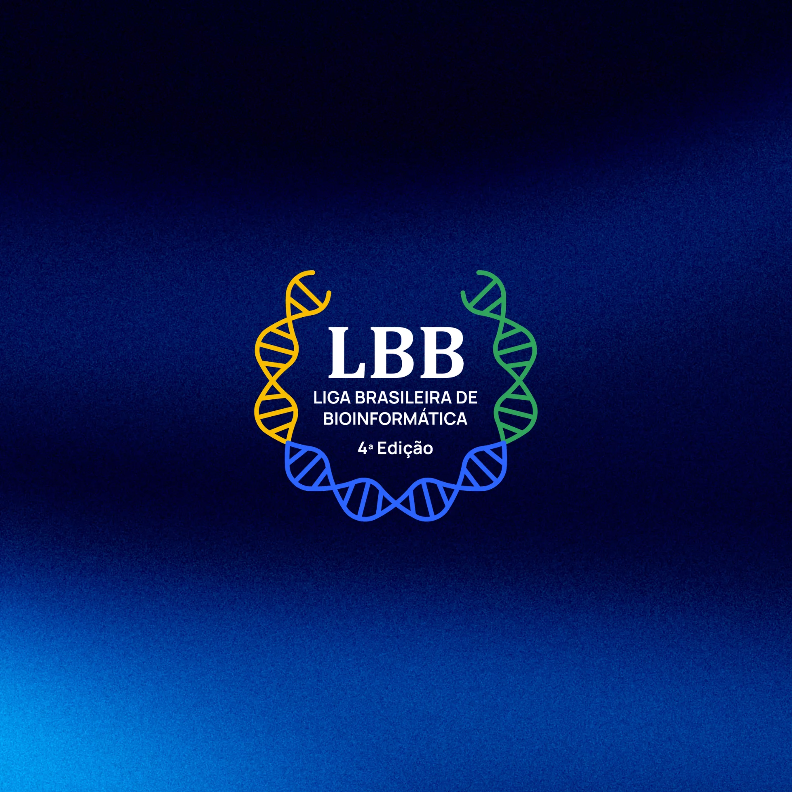
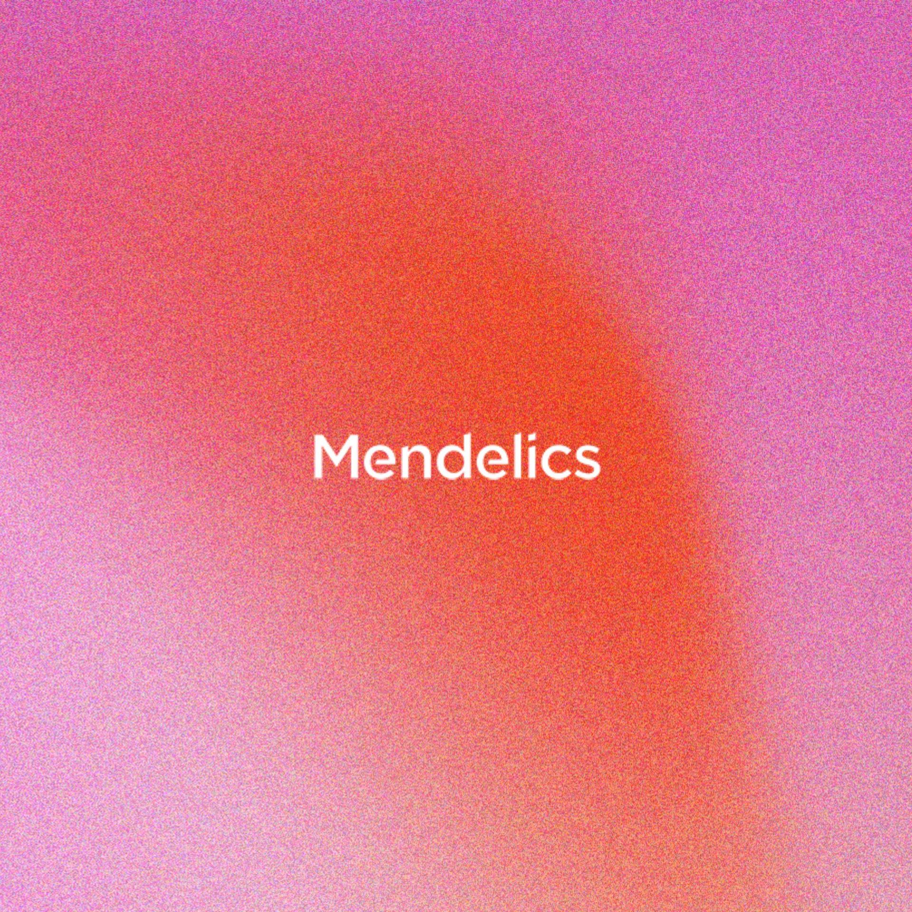
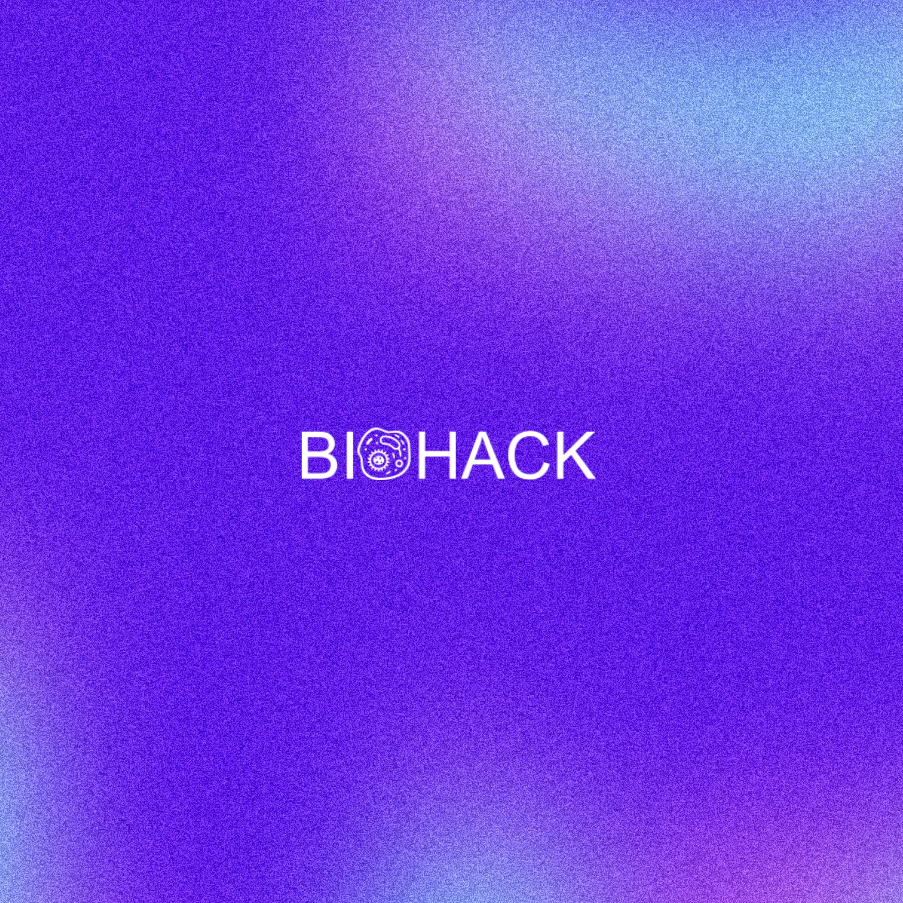

FELIPE VAZ PERES
I am a data scientist with a M.Sc. in bioinformatics and over seven years of experience in computational biology and large-scale data analysis.
I am particularly interested in computational approaches to cancer research, omics, non-coding RNA, and developing efficient & reproducible workflows.
RESEARCH
sugarcane pan-omics
This section highlights my two contributions to sugarcane pan-omics research, conducted at the Computational, Evolutionary, and Systems Biology Laboratory. In our first study, we built the sugarcane pan-transcriptome and revealed the variability in protein-coding transcripts across 50 genotypes. However, a substantial portion of the transcriptome, the non-coding RNAs, remained unexplored.
Despite ncRNAs representing a significant fraction of eukaryotic transcriptomes, their abundance, diversity, and functional relevance in surgarcane are still poorly characterized.
During my master’s, I constructed a multi-genotype ncRNA catalog and analyzed their expression and co-expression networks. Together, these studies integrate coding and non-coding RNAs, expanding our understanding of transcriptomic diversity and highlighting potential functional roles of ncRNA across diverse genetic backgrounds.
"Look again at that dot. That's here. That's home. That's us." - Carl Sagan
The Pale Blue Dot, captured by Voyager 1 in 1990, showing Earth as a tiny speck in the vastness of space, a humbling reminder of our place in the cosmos.
sugarcane pan-RNAome
Characterization of sugarcane ncRNAs and lncRNAs, revealing variability, conservation, co-expression, and functional roles.

sugarcane pan-transcriptome
Framework for pan-transcriptome assembly in complex polyploid crops, supporting sugarcane breeding programs.
computational reproducibility
Ensuring reproducibility remains one of the major challenges in computational biology and data science. Despite the growing availability of large-scale datasets, many published results are difficult to replicate due to incomplete documentation, non-standardized workflows, missing metadata, or dependence on specific computing environment. Whether in the context of gene expression studies or predictive modeling, transparent and reproducible practices are essential for building confidence in scientific results.
In my work I focus on developing robust, efficient, and reproducible workflows that adhere to the open science and FAIR principles (Findable, Accessible, Interoperable, and Reusable).
This section highlights my contributions to reproducible computational research, showcasing the tools, pipelines, and projects I have been involved in, each developed to enhance reproducibility and transparency in large-scale biological data analysis.

KAPT
Automated inference and annotation of the Kappaphycus alvarezii supertranscriptome.

T-M integration
Transcriptome–microbiome cross-correlation and host–microbial interaction inference.

R2C
Automated gene co-expression network construction and regulatory analysis.
seabed symphony
Pipeline for novel Biosynthetic Gene Cluster discovery in marine sediment microbiomes.

YAATAP
Snakemake pipeline for de novo transcriptome assembly and functional annotation.
software development
My path into software development began in the biological sciences. Working with the massive datasets produced by modern sequencing technologies, I quickly realized that understanding biology in the twenty-first century requires far more than laboratory skills, it demands the ability to design, automate, and scale analyses across terabytes of information. What began as a necessity soon became a passion.
I am deeply committed to the principles of Free and Open Source Software (FOSS) and enjoy contributing to and learning from open-source communities. Several of my projects and tools are freely available online, reflecting my belief that scientific progress is best achieved through transparency and collaboration.
This section highlights a selection of projects I’ve built, including tools and applications developed beyond the scope of computational biology.
ContFree-NGS
Open-source tool designed to remove contaminant sequences from NGS datasets.

paper-trackr
Tired of missing out on cool papers? stay up to date with paper-trackr!
HACKATHON

LBB 2025
Awarded 3rd place at the largest bioinformatics competition in Latin America, solving complex computational biology challenges.

Mendelics 2021
Awarded 3rd place by developing an automated variant calling pipeline in under 48 hours using real genomic data.

BIOHACK 2018
Awarded 2nd place by designing a synthetic biology bioremediation project presented at Brazil's largest biotechnology conference.